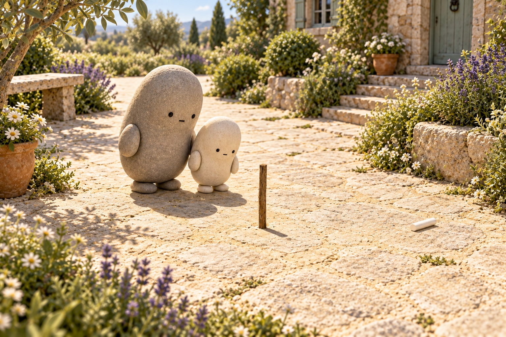
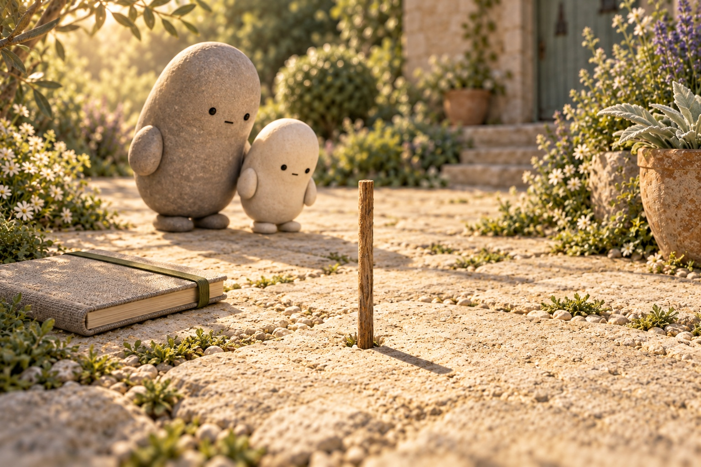
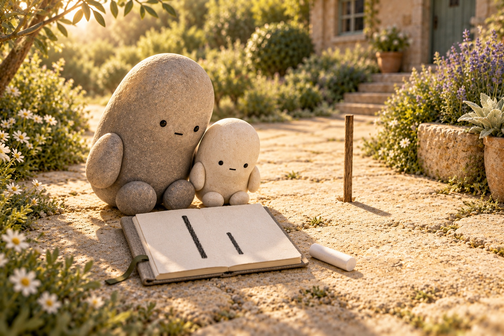
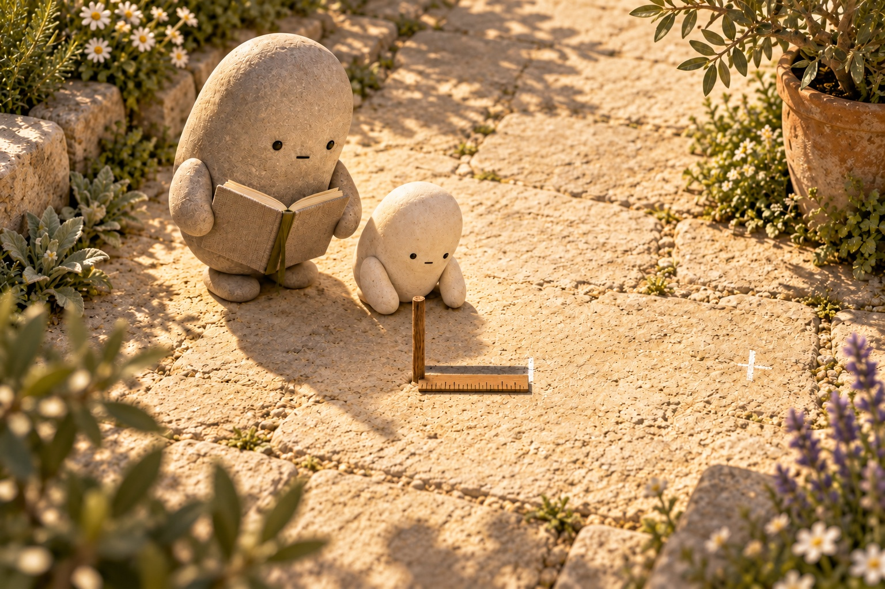

Mark the tip, then measure from the stick to the mark.
How can we save a shadow’s length?
Little puts a chalk mark at the long shadow’s tip.
A little explanation & something to try
A shadow forms where an object blocks sunlight. Mark its tip, then measure from the standing stick to the mark. Use the same measuring stick and unit to compare both lengths.
Try this. With Big, measure from the stick’s base to its shadow tip. Keep your eyes on the ground; never look at the sun.

Around noon, the sun is near its highest point for the day.
Why is the noon shadow so short?
The same standing stick now has a short, crisp shadow.
A little explanation & something to try
Around noon, the sun is near its highest point in the sky for the day. Light reaches the ground from higher above, so the stick’s shadow stays closer to its base. A lower morning or afternoon sun makes a longer shadow.
Try this. Compare the short shadow with the earlier chalk mark.

The bright side faces the sun. The shadow points away from the light.
Which way does a shadow point?
One side of the stick is bright. The shadow is on the other side.
A little explanation & something to try
The bright side faces the sun. The stick blocks some sunlight, leaving a shadow that points away from the light. Follow the shadow along the ground.
Try this. Point from the bright side, past the stick, toward the shadow.

A short noon shadow is a clue that the sun is high.
What clue can a short shadow give us?
Little keeps a long line and a short line in the notebook.
A little explanation & something to try
A short noon shadow is a clue that the sun is high. Compare the same standing stick in the same place, using the same unit. Chalk marks and notes help us remember what changed. Measuring can lead to another question.
Try this. Ask one new question about tomorrow’s shadow.
The shadow that changed
Shadows at Noon
A morning question
Little Wonderer found a long shape beside a standing stick. It was a shadow: a place where the stick blocked sunlight, the light from the sun. “Will it stay this long?” Little asked. Big set a linen notebook beside the garden path. They had a question to keep.
What made the shadow?
Save the tip
Little took a piece of chalk, a soft stick for making marks. “First mark the tip,” said Big. Little drew a small line where the shadow ended. To measure is to find how long something is. They used a measuring stick from the wooden stick’s base to the chalk.
Why did Little mark the tip?
A smaller patch
At noon, the middle of the day, they came back. The wooden stick had stayed in place, but its shadow had changed. “It is short and crisp!” said Little. Around noon, the sun is near its highest point for the day. The morning shadow had reached much farther.
What changed between morning and noon?
Follow the light
“Which way does it point?” asked Big. Little studied the ground. Sunlight reached one side of the stick. The shadow stretched away on the other side. The bright side faced the sun; the shadow pointed away from the light. Little traced its edge along the ground with one finger.
Which way does a shadow point?

Compare the marks
Little marked the new tip with chalk. They used the same measuring stick to check both lengths. They began at the same standing stick and used the same unit each time. The noon length was shorter. “The stick stayed the same,” Little said. “The sun’s height changed.”
Why use the same unit each time?
A clue to keep
In the notebook, Little drew a long line for morning and a short line for noon. Later, when the sun was lower, the shadow would grow longer again. A short noon shadow was a clue to a high sun. “What will we notice tomorrow?” Little asked.
For a complete still story, download the foldable book.
Count equal groups in the sunshine
Each group has the same number. Add the equal groups or rows to find the total.
Use the same unit to compare the morning and noon lengths.
Choose one task. Draw its equal groups or rows and tell how the addition matches your drawing.
1. Little draws 2 rows of chalk marks on the path, with 3 marks in each row. How many chalk marks are there?
3 + 3 =
A small hint
Add one row at a time: 3 + 3.
2. Big sets out 3 groups of measuring pebbles, with 4 pebbles in each group. How many pebbles are there altogether?
4 + 4 + 4 =
A small hint
Add the 3 equal groups: 4 + 4 + 4.
3. Little lays sticks in 4 rows in the sunny yard, with 2 sticks in each row. How many sticks are there?
2 + 2 + 2 + 2 =
A small hint
Add the sticks in each row: 2 + 2 + 2 + 2.
4. A shadow notebook has 2 rows of boxes, with 5 boxes in each row. How many boxes are there?
5 + 5 =
A small hint
Add the 2 rows: 5 + 5.
5. Little draws 5 groups of shadow-tip dots in the notebook, with 3 dots in each group. How many dots are there?
3 + 3 + 3 + 3 + 3 =
A small hint
Add the 5 equal groups: 3 + 3 + 3 + 3 + 3.
6. Big draws 5 rows of chalk circles beside the shadow, with 5 circles in each row. How many circles are there?
5 + 5 + 5 + 5 + 5 =
A small hint
Add one row at a time: 5 + 5 + 5 + 5 + 5.
Give a measurement its words
Write one clear command sentence about measuring a shadow. Say it first if you like.
Mark the tip, then measure from the stick to the mark.
First, …tell how to stand the stick or mark the tip
Use the same unit to compare the morning and noon lengths.
Then, …tell how to measure from the stick to the mark
A short noon shadow is a clue that the sun is high.
At the end, …tell how to save or compare the length
Draw the stick, its shadow, and a chalk mark. Add one label.
SAY IT FIRST. THEN DRAW OR WRITE.
A temporary space. Copy your words before closing or reloading; they are not saved or sent.
standstickmarktipshadowmeasurefirstthen
Does your sentence tell what to do, with a command such as Stand, Mark, Measure, or Compare?
A stick, sunlight, and a shadow
A clue worth keeping
Welcome words, pointing, or a sketch. Tell how a high sun makes a short shadow, and how you compared the lengths.
You can stop here.
Follow a shadow through the day
Predict. Will the same standing stick have a longer or shorter shadow around noon?
Arrange in words. Stand a stick on level ground. Keep it in the same place. Choose a lower sun or a high noon sun.
Activate. Sunlight reaches one side of the stick. The shadow points away from the light.
Notice. The higher sun makes a short, crisp shadow. A lower morning or afternoon sun makes a longer shadow. Mark each tip with chalk, then compare lengths using the same unit.
A short noon shadow is a clue that the sun is high. Study the ground and keep a question.
Quiz
Answer key
Quiz 1
Around noon, the sun is near its highest point for the day, so the same standing stick has a shorter shadow.
Quiz 2
A lower sun makes a longer shadow from the same standing stick.
Quiz 3
A shadow points away from the light. The bright side of the stick faces the sun.
Quiz 4
Keep the stick standing in the same place. Mark each tip and measure from the stick with the same unit, then compare the lengths.